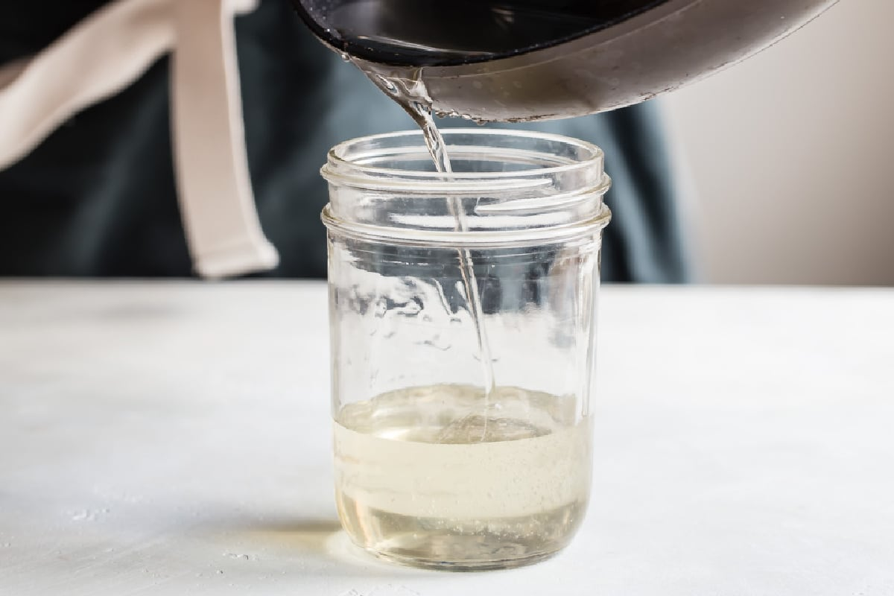

Simple Syrup

Description
Simple syrup is a commonly used ingredient in many cocktails
and other drink recipes. It's also easy to make!
Ingredients
- 1 cup white sugar
- 1 cup water
Steps
- In a medium saucepan combine sugar and water. Bring to a boil, stirring,
until sugar has dissolved. Allow to cool.